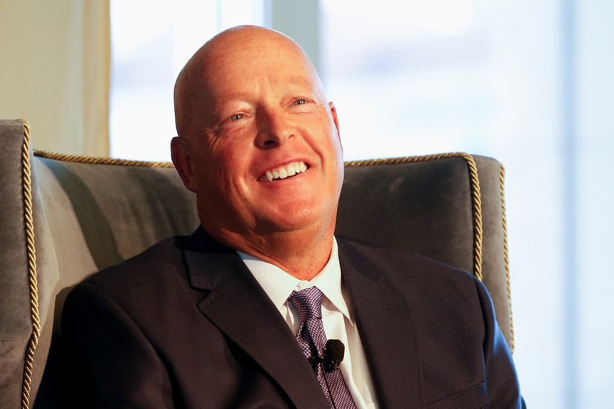
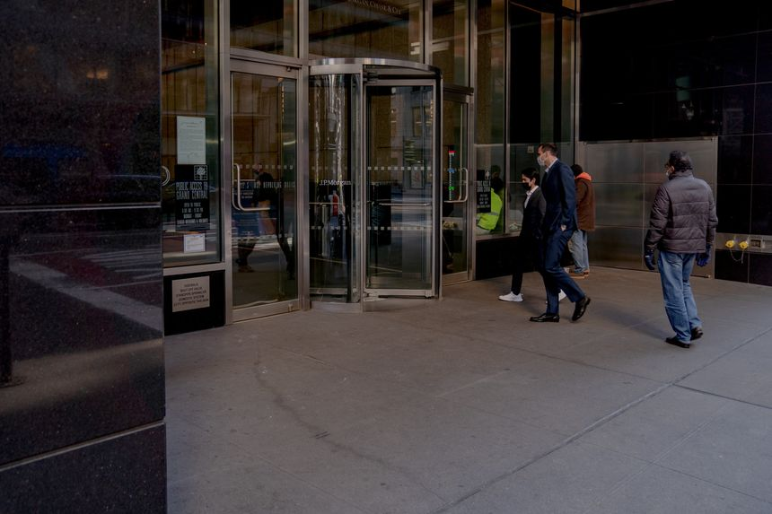
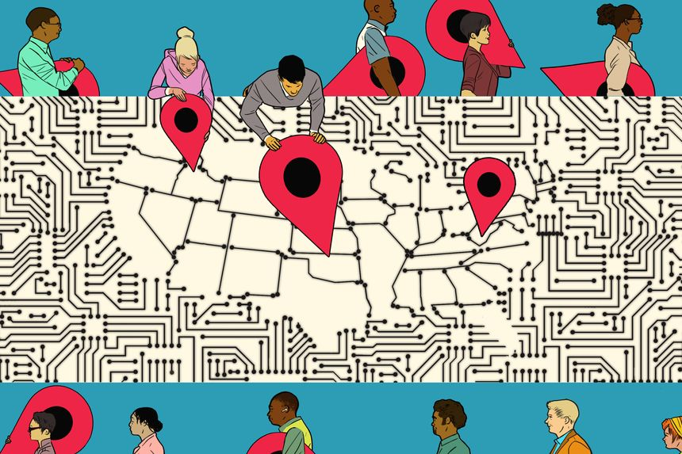

| 时间 | 分类 | 标题 | 副标题 | 正文 | 图片 |
|---|---|---|---|---|---|
| 2022-01-20 18:51:00 | Opinion | A Regulatory Burden for Every Room of Your House | The Biden administration moves to make appliances more expensive and less effective. | ||
| 2022-01-20 18:50:00 | Opinion | Biden, Trump and ‘Illegitimate’ Elections | What’s worse than a President who claims elections are a sham? Two Presidents. | ||
| 2022-01-20 18:48:00 | Opinion | How Ukraine Feels About a ‘Minor Incursion’ by Russia | Did Biden commit a blunder like Dean Acheson’s on Korea? |  |
|
| 2022-01-20 18:45:00 | Markets | Netflix Isn’t Looking Up | Latest subscriber growth and forecast indicate streaming pioneer might be hitting a ceiling | Netflix has proved quite adept at pleasing the masses. Finding more of them is getting to be the real problem. Both dynamics were evident in the streaming giant’s fourth-quarter results Thursday afternoon. Netflix added nearly 8.3 million new paid subscribers during the quarter—its best growth in a year as the company has dealt with the aftermath of the pandemic’s pull-forward effect. |
|
| 2022-01-20 18:43:00 | Opinion | Back to the Degraded Military Future | Failure to pass a budget will squeeze defense at a vulnerable time. | ||
| 2022-01-20 18:39:00 | Opinion | Cars Are Too Easy to Steal | The Milwaukee City Council threatens companies whose autos are stolen. | ||
| 2022-01-20 18:36:00 | Opinion | I’m Stuck With an Anti-Semitic Labor Union | It denounces Israel and treats me as a second-class citizen for resigning. | ||
| 2022-01-20 18:35:00 | Opinion | Regulation Will Be Good for Crypto | Competition lawyers and economists should be part of the federal government’s policy deliberations. | ||
| 2022-01-20 18:34:00 | Opinion | My Deadbeat Tenant Insisted on Eviction | I told him about the rent vouchers, but he preferred to get the boot. | ||
| 2022-01-20 18:30:00 | Opinion | What It Means to Be Pro-Life | Faith-driven pregnancy resource centers are becoming more prominent. |  |
|
| 2022-01-20 18:21:00 | Books & Arts | ‘Blood in the Garden’ Review: Blue, Orange and Red | The 1990s were arguably the Knicks’ most successful decade. Since 2001, however, no NBA team has lost more games than New York. | ||
| 2022-01-20 18:20:00 | CIO Journal | New York Health Insurer Taps New CIO | Excellus BlueCross BlueShield’s Cindy Langston sees data integration as key to delivering personalized care to members | ||
| 2022-01-20 18:00:00 | Books & Arts | ‘The King’s Daughter’ Review: Entertainment—and Coherence—Dethroned | Pierce Brosnan stars in the confused, long-gestating adaptation of Vonda N. McIntyre’s novel. | ||
| 2022-01-20 17:42:00 | Tech | TikTok Is Testing a Paid Subscription Model | New concept comes as rival Instagram plans trials of a similar service | TikTok, the buzzy video-sharing app, said it is testing a paid subscription model, a concept that could allow creators to charge people to view their content. The strategy appears to be similar to Instagram, which earlier this week said it was launching trials for its own subscription service. The Meta Platforms Inc. unit said its feature could provide content creators with another way to make money from their followers. |
|
| 2022-01-20 17:39:00 | Books & Arts | ‘Lunana: A Yak in the Classroom’ Review: The Glories of Really Remote Learning | A lackluster educator is sent to a classroom in the distant countryside in Bhutan’s charming Oscar entry | ||
| 2022-01-20 17:38:00 | Books & Arts | ‘The Gilded Age’ TV Review: Slumming in High Society | Julian Fellowes takes his usual upstairs/downstairs approach to the upper echelons of late 19th-century Manhattan | ||
| 2022-01-20 17:34:00 | Books & Arts | ‘Neymar: The Perfect Chaos’ Review: Soccer, Scandal and Stardom | Netflix focuses on one of the best players in the world, from his youthful beginnings with Santos to his recent tenures with Barcelona and Paris Saint-Germain. |  |
|
| 2022-01-20 17:28:00 | CIO Journal | Discount Tire’s Tech Revamp Positions It for Shift to Electric Cars, CIO Says | New IT system will provide greater visibility about the regions where demand for electric-vehicle tires is highest, says CIO Gary Desai | ||
| 2022-01-20 17:08:00 | Markets | JPMorgan CEO Jamie Dimon Gets $3 Million Raise to $34.5 Million for 2021 | Nation’s biggest bank reported $48.3 billion in net income last year, a third more than the old record | JPMorgan Chase & Co. is paying Chief Executive Jamie Dimon $34.5 million for a record-breaking 2021, $3 million more than he made in the previous two years. The nation’s biggest bank reported $48.3 billion in net income last year, a 66% increase from the prior year and a third more than the old record. The stock rose 25%, but underperformed the S&P 500 and the KBW Nasdaq Bank Index. |
|
| 2022-01-20 16:47:00 | U.S. | Supreme Court Permits Continued Enforcement of Texas Six-Week Abortion Ban | Court denies providers’ request to allow challenge to S.B. 8 to proceed in federal court | WASHINGTON–The Supreme Court allowed Texas’ six-week abortion ban to remain in effect indefinitely, issuing an order Thursday blocking litigation against the law while the state’s highest court weighs a procedural question related to the measure’s enforcement. The court’s order was unsigned and, as is typical, provided no explanation. The three liberal justices dissented, arguing that Thursday’s order undermined the court’s December decision permitting abortion providers to proceed in limited fashion with their lawsuit against the Texas law. |
 |
| 2022-01-20 16:34:00 | U.S. | Georgia D.A. Requests Grand Jury to Probe Trump Bid to Overturn 2020 Vote | Fulton County district attorney says she needs subpoena power to get testimony | ATLANTA—The top prosecutor for Georgia’s most populous county has requested a special grand jury to investigate efforts to overturn Georgia’s 2020 election results, the first indication in months that a probe is proceeding into the actions of former President Donald Trump and supporters after his loss in the state. In a letter sent Thursday, Fulton County District Attorney Fani Willis told the chief judge of Fulton County’s Superior Court that the grand jury was necessary to secure key testimony. |
|
| 2022-01-20 16:33:00 | Business | Netflix Shares Sink as Subscriber Growth Misses Forecast | The video streamer reports a jump in subscribers, though not as much as expected, helped by ‘Don’t Look Up’ and ‘Cobra Kai’ | Netflix Inc. said 8.3 million subscribers joined its platform in the latest quarter, slightly missing its own forecast, as a loaded content lineup failed to attract more viewers amid increased competition. The new sign-ups brought Netflix’s paid global subscriber base to 221.8 million. The streaming platform had projected 8.5 million net new subscribers for the period, in line with the prior year’s fourth quarter. The consensus forecast among analysts on Wall Street was for 8.3 million, according to FactSet. |
|
| 2022-01-20 16:31:00 | World | Teen Zara Rutherford Becomes Youngest Woman to Fly Solo Around Globe | 19-year-old pilot completed the record-setting flight in a two-seater plane over 155 days | Zara Rutherford spent 155 days flying around the world, navigating rains, turbulence, wildfire smoke and other challenges before landing in Belgium Thursday, completing her quest to become the youngest woman to fly around the globe solo. With her trip, Ms. Rutherford broke the record for youngest woman to fly around the world solo, which was held by Shaesta Waiz, who made her voyage in 2017 at the age of 30, according to Guinness World Records. The youngest person to make the solo trip is still Travis Ludlow, who did so last year when he was 18. |
|
| 2022-01-20 16:12:00 | CFO Journal | Medical Glassmaker Schott to Increase Spending Amid Boost From Covid-19 Vaccines | The German specialty glass and materials manufacturer made vials for over five billion doses of in 2021 | ||
| 2022-01-20 16:11:00 | Politics | Senators Seek Changes to Electoral Count Act to Firm Up Presidential Elections | With Democrats’ broad elections package defeated, lawmakers see opening to make narrower changes | WASHINGTON—With Democrats’ sweeping voting-access legislation hitting a dead end, a bipartisan group of senators is turning to possible areas of compromise on narrower but critical parts of elections rules, including changing an 1887 law that governs how Congress deals with presidential election disputes. Republicans in recent weeks have started talking about making changes to the Electoral Count Act in an effort to stop a repeat of what happened following the 2020 election. Then-President Donald Trump, a Republican, had urged then-Vice President Mike Pence to reject the Electoral College votes from some states, which he declined to do. That same day, the Capitol was overrun by a pro-Trump mob seeking to stop the certification of the election victory of President Biden, a Democrat. |
|
| 2022-01-20 15:57:00 | Tech | Senate Panel Approves Antitrust Bill Restricting Big Tech Platforms | Legislation would bar Amazon, Google, Apple and others from favoring their own products over competitors’ | WASHINGTON—A Senate panel approved antitrust legislation forbidding the largest tech platforms from favoring their own products and services over competitors’, scoring a win for backers of stricter Big Tech regulation against fierce industry opposition. The American Innovation and Choice Online Act moves next to the Senate floor, where several senators said they wanted to see additional changes before backing the measure. Thursday’s 16-6 vote in the Senate Judiciary Committee showed the bill had bipartisan support but also raised bipartisan concerns. |
|
| 2022-01-20 15:36:00 | World | U.K. Police Detain Two in Probe Into Texas Hostage Taker | Malik Faisal Akram died after taking four hostage at Texas synagogue | LONDON—U.K. authorities detained two people in a probe into the British man who took four worshippers hostage at a Texas synagogue, as they work with U.S. authorities to determine his movements and motive. The two men were arrested Thursday morning in the U.K. cities of Birmingham and Manchester, according to a statement from counterterror police, which added that they remained in custody for questioning. |
|
| 2022-01-20 15:30:00 | Life & Work | BMW i4 M50: A New Strategy for Electrification | Built on the same body as the gas-powered 4 Series Gran Coupe, BMW’s luxury EV sedan marks an evolution in manufacturing. And its low center-of-gravity sporty stance handles like a dream, says Dan Neil. | IN SEPTEMBER I traveled to Munich to drive two vehicles that are hugely consequential for BMW : the iX, a battery-electric midsize luxury SUV; and our guest this week, the i4 M50 sedan, an electric—but otherwise nearly indistinguishable—iteration of the well-groomed 4 Series Gran Coupe. After a couple hundred kilometers soaring across Bavarian fairyland, here’s my capsule review: glorious. Not only that. Sweet, swift, swank, swell, fast as hell, hushed as a chapel, cool as marble, minty fresh. With its front and rear e-motors providing a digitally mastered 536 hp to the wheels, the i4 M50 accelerates like Derby Lane’s electric rabbit—0-60 mph in 3.7 seconds. But even at Autobahn speeds, just ask; the upwelling torque (max 586 lb-ft) will mush you lovingly into the seat. |
|
| 2022-01-20 15:19:00 | World | Prince Andrew’s Twitter Profile, Instagram Account Shut Down | The move comes after Queen Elizabeth stripped the prince of titles; his YouTube channel is also inaccessible | Some of Prince Andrew’s social-media accounts have been deactivated, days after Queen Elizabeth stripped him of his military affiliations and patronages amid a legal battle over sexual-abuse allegations. The prince’s Twitter profile, Instagram account and YouTube channel were inaccessible Thursday afternoon. His Facebook page was live but the last post was from 2020. |
 |
| 2022-01-20 15:17:00 | Economy | U.S. Existing-Home Sales Reached a 15-Year High of 6.1 Million Last Year | Housing economists expect the market frenzy to subside in 2022 as mortgage rates rise | U.S. home sales surged to a 15-year high in 2021, powered by low borrowing rates and an intense buyer demand that are expected to keep the market hot during the first months of 2022. But the recent rapid rise in interest rates has some housing economists forecasting that the market frenzy will subside in the second half of the year. |
|
| 2022-01-20 15:16:00 | Markets | Peloton’s Crash Will Keep Burning | Raising prices after recently lowering them, Peloton seems to be running out of good options | The wheels have come off the Peloton story and now the company wants its customers to pay for its own repairs. With Peloton’s shares down about 80% over the past year, the fitness equipment maker is reportedly exploring multiple avenues to cut expenses. One of them: Asking new customers to shoulder some costs. Come the end of the month, Peloton will start charging U.S. consumers for delivery and setup of some of its connected fitness devices, according to its website—a quiet but material change that could have big repercussions on future sales volumes. |
|
| 2022-01-20 15:12:00 | World | Havana Syndrome Unlikely Caused by U.S. Foes, CIA Says | Ailments afflicting hundreds of U.S. personnel likely the result of other medical conditions, environmental factors or stress, agency concludes | A debilitating, mysterious medical ailment known as Havana Syndrome that has struck hundreds of U.S. diplomats, spies and other personnel world-wide was unlikely caused by attacks from Russia or other foreign adversaries, a Central Intelligence Agency report says. “We assess it is unlikely that a foreign actor, including Russia, is conducting a sustained, world-wide campaign harming U.S. personnel with a weapon or mechanism,” a senior CIA official said. |
 |
| 2022-01-20 15:08:00 | Politics | U.S. Allows Baltic NATO Members to Send Arms to Ukraine | Decision will enable shipments of U.S.-made antitank and air-defense weapons to Ukrainian military | WASHINGTON—The U.S. has given approval for three Baltic NATO members to send American-made weapons to Ukraine, U.S. officials said. The decision will enable Estonia, Lithuania and Latvia to send Javelin antitank weapons and Stinger air-defense systems for Ukraine’s forces. |
|
| 2022-01-20 15:00:00 | U.S. | For-Profit Colleges That Lend to Their Own Students Face Scrutiny | Review by regulator is part of Biden administration crackdown on aggressive debt collection on private student loans | A federal financial regulator said it would scrutinize the practices of for-profit colleges that lend to their own students as part of a crackdown on aggressive debt-collection practices in the private student-loan industry. The Consumer Financial Protection Bureau will review several practices used by some private postsecondary institutions that also operate as lenders, including “placing enrollment restrictions, withholding transcripts, improperly accelerating payments, failing to issue refunds, and maintaining improper lending relationships,” the regulator said Thursday. |
|
| 2022-01-20 15:00:00 | Economy | Fed Launches Review of Possible Central Bank Digital Currency | Officials solicit public comment, but are unlikely to decide soon whether to issue a government-backed cryptocurrency | WASHINGTON—The Federal Reserve on Thursday launched a review of the potential benefits and risks of issuing a U.S. digital currency, as central banks around the world experiment with the potential new form of money to keep pace with private-sector payments innovations. Fed officials have been divided on the matter, making it unlikely they will decide soon on whether to create a digital dollar. Unlike private cryptocurrencies like bitcoin, a Fed version would be issued by and backed by the U.S. central bank, a government entity, as are U.S. paper dollar bills and coins. |
|
| 2022-01-20 14:45:00 | Life & Work | The Wine Writer Who Unlocked the Secrets (and Cellars) of Bordeaux | Our wine columnist salutes the great wine educator Dewey Markham, Jr., who died in November. Family members and excerpts from Mr. Markham’s own writing reveal how a Black American not fully fluent in French gained access to a notoriously insular region’s great châteaux. | JUST OVER TWO months ago the world of wine lost a gifted writer and educator whose remarkable contribution to wine scholarship reflects a quietly remarkable life. Dewey Markham, Jr., who died in November at the age of 68, wrote a seminal book on the wines of Bordeaux. “1855: A History of the Bordeaux Classification” provides an exhaustive account of the unique ranking system for Bordeaux wines—from first-growths, or premières crus, down to fifth-growths, or cinquièmes crus—instituted in the reign of Napoleon III and the standard by which Bordeaux wines are understood (and priced) to this day. Published in 1997, this work is all the more impressive for the fact that Mr. Markham was a Black American writing about an insular, overwhelmingly white, hugely hierarchical wine region in France. |
|
| 2022-01-20 14:40:00 | Markets | Inflation and Insurance Are in a Complicated Relationship | Rising auto and home-repair costs can sting insurers, but higher premium rates and growing exposures also can deliver a boost | It isn’t just the existence of inflation that matters for insurance stocks; the question is how and where rising prices show up. Right now, higher prices for used cars, auto- and home-repair labor and materials are contributing to increasing severity of losses on auto and homeowners insurance claims. At the same time, as people get back to pre-pandemic driving habits, that can increase the frequency of claims. At Travelers Cos., loss ratios rose for both home and auto insurance in 2021 over the prior year—in contrast to improvements in business and bond-and-specialty insurance, the company reported on Thursday. |
|
| 2022-01-20 14:21:00 | Business | Merrick Garland to Meet With Boeing Crash Victims’ Families | Families say Justice Department violated their rights by not conferring with them over plane maker’s punishment | WASHINGTON—Attorney General Merrick Garland plans to meet with families of people killed in two deadly crashes of Boeing Co. ’s 737 MAX jet, who say prosecutors should have conferred with them before striking a $2.5 billion settlement with the aerospace company last year. Mr. Garland intends to speak with family members and their lawyers within the next week, according to a court filing Wednesday. In December some of the families filed a motion asking a judge in Fort Worth, Texas, to find that their rights as crime victims were violated and to consider reopening Boeing’s deal with the government. |
|
| 2022-01-20 14:13:00 | Politics | Biden Draws Criticism After Raising Prospect of Illegitimate 2022 Election | White House says president wasn’t casting doubt on midterm results | President Biden’s comments raising the prospect of an illegitimate election result in 2022 prompted criticism from Republicans and some election experts along with a statement from the White House saying that wasn’t what he meant. During a news conference Wednesday, as Democrats’ proposed voting laws stood on the verge of defeat in the Senate, Mr. Biden was asked whether he expected the 2022 elections would be legitimate. |
|
| 2022-01-20 14:07:00 | Business | Disney Chief Bob Chapek’s Pay More Than Doubled Last Year as Pandemic Strains Eased | CEO of entertainment giant took in $32.5 million, including $14.3 million cash bonus | Walt Disney Co. paid company chief Bob Chapek $32.5 million in total compensation for 2021, his first full calendar year at the helm of the entertainment and media conglomerate. Nearly half of Mr. Chapek’s pay came in the form of a $14.3 million cash bonus, according to a company filing Wednesday. The award shows Disney has revived giving out non-equity bonuses after suspending them in 2020 as the coronavirus pandemic ravaged the company’s revenue. Mr. Chapek’s total compensation last year more than doubled the $14.2 million he earned in 2020. |
 |
| 2022-01-20 13:59:00 | U.S. | New York City Mayor Eric Adams to Convert First Paycheck to Cryptocurrency | Mayor says he will move the money into bitcoin and ethereum | New York City’s new mayor, Eric Adams, said his first paycheck will be converted into bitcoin and ethereum. The paycheck, expected Friday, will be switched into cryptocurrency through the online platform Coinbase Global Inc . , he said Thursday. |
|
| 2022-01-20 13:48:00 | Politics | Ivanka Trump Asked by Jan. 6 Committee to Voluntarily Cooperate With Probe | The panel has been investigating last year’s riot at the Capitol | WASHINGTON—The House select committee investigating the Jan. 6 attack on the U.S. Capitol has asked former President Donald Trump’s daughter Ivanka Trump to cooperate with the panel voluntarily. In a letter to Ms. Trump, the committee said it is interested in her knowledge of her father’s efforts to convince then-Vice President Mike Pence, who was presiding over a joint session of Congress on Jan. 6, to prevent ratification of the 2020 presidential election results. |
|
| 2022-01-20 13:48:00 | U.S. | U.S. Drops Case Against MIT Professor Accused of Hiding China Ties | Gang Chen was one of around two dozen academics charged since 2019 with allegedly lying about their affiliations | Federal prosecutors dropped criminal charges against a Massachusetts Institute of Technology mechanical engineering professor accused of hiding his China ties, saying in a Thursday filing that the government no longer believed it could prove its case at trial. Gang Chenwas arrested last January on charges of concealing posts he held in China in a grant application he had made to the U.S. Department of Energy in 2017. The Wall Street Journal reported last week that prosecutors had recommended that the Justice Department drop the case, based in part on witness testimony that investigators obtained since his arrest, citing people familiar with the matter. |
|
| 2022-01-20 13:42:00 | Real Estate | Why Grandmillennial Decor Needs Lots of Black | Without the super-dark hits, this sitting room would be just granny, not granny chic | TUCKED INTO a 1926 Tudor-style home, Katie Rosenfeld’s parlor is plush with comfortable furnishings in such semisweet patterns as the ticking stripes of the roll-arm sofa. “It has very Anglo-Indian vibes,” said the interior designer of her sitting room in Wellesley, Mass. “All the elements are there. There’s chintz, there’s ticking, there’s floral, there’s plaid, there’s paisley.” But to dodge potential stodginess, she introduced black. Result: A room with a somewhat darker vibe. “There’s a slight edge,” Ms. Rosenfeld said, pointing out the black in the art, lamps and window details as well as the coffee table’s brooding hue. “It’s graphic, and it’s certainly not precious,” she said of the space. |
|
| 2022-01-20 13:41:00 | Opinion | Readers Mourn the Loss of Theater Critic Terry Teachout | He wrote as an interested friend rather than an intellectual scold. | Terry Teachout wrote as someone who truly loved the theater and the artists who create it (“Terry Teachout,” Review & Outlook, Jan. 14). He was honest but never unnecessarily harsh, always gave credit where it was due, and opened my eyes to the wealth of beautiful theater being created across the nation. Reading a Teachout review was like seeing the show with him—and he often made the show sound so marvelous, I wished I could have. As a fellow lover of the theater, I will deeply miss his contributions to these pages. Rachel Hurt |
|
| 2022-01-20 13:40:00 | Opinion | ‘The Model of Incompetence’: Pointing the Finger at Chicago Public Schools | The scandal of the teachers union’s behavior wouldn’t exist but for the pusillanimous behavior of CPS. | “The Scandal of Chicago’s Teachers” (Review & Outlook, Jan. 6) wouldn’t exist but for the pusillanimous behavior of the Chicago Public Schools. This is the body that negotiates union contracts and establishes the budget. It is ultimately responsible for schools’ performance. Historically, it has been governed by mayoral appointees and does the mayor’s bidding. Over the past 20 years, CPS has been the model of incompetence. Enrollment over that period has declined by about 25%, or 100,000 students. Over the same period, the budget has grown, in constant dollars, by over 80%. |
|
| 2022-01-20 13:38:00 | Opinion | ‘Flatten the Curve’ Remains Our Best Policy Option for Omicron | Hospitals are overtaxed. It is misguided to allow large numbers of people to get Covid. | In “Slow the Spread? Speeding It May Be Safer” (op-ed, Jan. 11), Vivek and Apoorva Ramaswamy make an interesting argument. They suggest that the current cautious response to the relatively “less deadly” Omicron variant could facilitate the development of a disastrous “supervariant.” Three points, however, deserve special scrutiny. First, the number of mutations and the opportunity for forming new variants is not increased by depriving the viruses of new hosts by masking and social distancing. On the contrary, the occurrence of more infections increases the opportunity for replication of the virus, which is when mutations occur. |
|
| 2022-01-20 13:13:00 | Tech | Twitter Embraces NFTs With New Profile-Picture Feature | Service will be available to some users of the company’s Blue subscriber service | Twitter Inc. will start allowing some users to use nonfungible tokens as their profile pictures, jumping into a digital-goods business that has exploded over the past year. The feature, launching Thursday, is being offered to users of Twitter’s Blue subscription service. It marks the company’s biggest push thus far into NFTs, which are tokens that act as vouchers of authenticity for virtual goods, such as digital art, that can be tracked and traded along blockchain technology, a type of digital ledger. |
|
| 2022-01-20 13:06:00 | World | Ukraine Fears Minor Attacks Are in Russia’s Game Plan | Foreign minister says President Biden’s ‘minor incursion’ comment plays down Moscow’s intentions, which Kyiv sees as destabilizing country, not invading | KYIV, Ukraine—Russia wants to destabilize Ukraine using a variety of attacks, Ukrainian officials said, pushing back against a suggestion from President Biden that the U.S. and its allies would respond differently to a small-scale incursion than a full-on invasion. In an interview with The Wall Street Journal, Foreign Minister Dmytro Kuleba on Thursday responded to Mr. Biden’s comment suggesting that Western nations weren’t in tandem on how to respond to Russian President Vladimir Putin in the event of a “minor incursion” on Ukraine. His statement was later clarified by the White House. |
|
| 2022-01-20 12:57:00 | Life & Work | This Light and Easy Citrus Dessert Recipe Is the Best Winter Self-Care | How the French take on January: Dollop orange segments in airy custard, pop them under the broiler et voilà. This delicious dessert is effortless elegance itself. | THE WORD GRATIN might conjure visions of creamy potatoes Dauphinoise or perhaps the molten-cheesy top on a crock of onion soup. But in France, a gratin is as likely to be a light fruit dessert as it is something savory. In the former case, slices of fruit are placed in the bottom of a shallow, ovenproof dish, thinly blanketed with sabayon (a light custard) and broiled for just a few minutes. Most any fruit can be used, from citrus to mango in winter and, in the summer, berries, stone fruit and figs. This remarkably quick and easy dessert comes together in just a few swift, elegant strokes. The blast of high heat from the broiler intensifies and concentrates the flavor of fruit, fast; a small amount of sabayon gives it a luxurious, silken quality. In summer it’s a splendid alternative to fruit salad, and in winter it offers comfort and warmth and a bit of consoling indulgence. |
|
| 2022-01-20 12:56:00 | Opinion | Kyiv Waits for a Russian Invasion | Polls find at least one-third of Ukrainians are ready to take up arms to resist. | Kyiv, Ukraine It’s a scary time here in Ukraine. That’s saying something, because the past eight years haven’t been easy. |
|
| 2022-01-20 12:55:00 | Opinion | Hoarding Is a Bad Idea During Times of Supply-Chain Uncertainty | Hay was in short supply, so we stocked up at high prices. It was a costly mistake—and still is. | ‘Buy as much hay as you can,” our farm manager commanded in 1988. “The hay crop is bad. Prices are up. We need to build inventory.” We proceeded to buy an extra 3,000 tons of hay, used to make mushroom compost, at record high prices. We unloaded the bales from delivery trucks, loaded them onto flatbed trailers, hauled them into the fields, and stacked them into neat rows. We covered the rows and secured them with ropes. Then storms ripped the shrouds, rain soaked the bails, and $450,000 of hay rotted into the ground. Hoarding is a natural human response during times of uncertainty, and people in business can panic-buy like shoppers jockeying for toilet paper at Costco . Hoarding rarely turns out well, however. With supply-chain disruptions and shortages from pandemic lockdowns, many managers are again questioning whether stocking up is really that bad. But that’s the wrong lesson to take from recent shortages. |
|
| 2022-01-20 12:24:00 | CMO Today | ADP Settlement Offers Framework for Future Digital-Accessibility Agreements | Human-resources software company entered structured negotiations with nonprofit LightHouse for the Blind and Visually Impaired after it sued in 2020 | ||
| 2022-01-20 11:31:00 | Opinion | Bipartisan Majority Rejects Biden Effort to Change Senate Rules | The President admits he ‘didn’t call many Republicans at all.’ | The decline of America’s governing institutions has been greatly exaggerated. Despite bitter partisan differences over a range of issues and a president who continues to spew hateful falsehoods about his political opponents, lawmakers from both parties came together on Wednesday night to preserve Senate tradition and block an unprecedented federal power grab over the operation of U.S. elections. The Journal’s Siobhan Hughes and Eliza Collins report from Washington: |
|
| 2022-01-20 11:31:00 | Markets | On Wall Street, Bonuses Are Up but the Mood Is Not | Pay rose twice as fast as revenue at Wall Street’s biggest banks in 2021; it probably won’t happen again, they say | Higher bonuses handed out this week across Wall Street came with a warning: Don’t get used to it. After a blockbuster year, the five biggest investment banks paid out $142 billion in compensation for 2021, $18 billion more than in 2020. Pay, which on Wall Street is usually tightly tethered to how much money firms bring in, rose twice as fast as revenue. |
 |
| 2022-01-20 10:37:00 | U.S. | Oath Keepers Cached Weapons for Jan. 6 Capitol Attack, Prosecutors Say | Cartloads of arms and ammo were at ready at a Comfort Inn in Virginia suburbs, according to indictment against members of far-right militia group | WASHINGTON—The right-wing Oath Keepers militia group was prepared to move a stash of firearms and equipment from a Virginia hotel to rioters on Jan. 6, federal prosecutors said, painting the most detailed portrait yet of the planning the group’s members allegedly undertook as they tried to stop the certification of President Joe Biden’s 2020 election win. Edward Vallejo, a 63-year-old Arizona man arrested last week on seditious-conspiracy and other charges, worked with others to coordinate what they called “quick reaction forces” stationed at a Comfort Inn in Arlington, Va., prosecutors said. |
|
| 2022-01-20 10:34:00 | Books & Arts | ‘Dream-Child’ Review: Madness, Poetry and Dinner With the Lambs | A friend of Wordsworth and Coleridge, Charles Lamb cherished literary ambitions. Then calamity struck. | For much of his literary life, Charles Lamb was a jack of all trades and a master of none. He wrote poetry like his Romantic contemporaries and good friends Samuel Taylor Coleridge and William Wordsworth though his verse was of a lesser caliber. He produced a sentimental novel that underwhelmed and a farcical play that bombed. He collaborated with his sister, Mary, on a children’s adaptation of Shakespeare’s work, and compiled critical commentaries on the bard’s fellow Elizabethan and Jacobean dramatists. Only when Lamb turned his hand to the familiar essay at the age of 45 did he find his true métier. Adopting the nom de plume of “Elia” but drawing upon his own thoughts and deeds, Lamb captivated readers with a winning blend of insight, intimacy, wordplay, allusion and what Walter Pater called “hints of the innermost reason in things.” However, Lamb wrote while battling personal demons. He was self-conscious about his stutter and drank heavily to overcome it and to endure frequent “sad depression of spirits.” That depression took shape, and took hold, following a life-defining family catastrophe. Lamb, then aged 22, gave a stark summary of it in a letter to Coleridge: “My poor dear dearest sister in a fit of insanity has been the death of her own mother. I was at hand only time enough to snatch the knife out of her grasp.” |
|
| 2022-01-20 10:00:00 | World | United Airlines Chief Tried to Create a One-Stop Travel Shop | Richard J. Ferris, who has died at age 85, later invested in hotels and helped organize acquisition of Pebble Beach resort | In the mid-1980s, Richard J. Ferris assembled what he hoped would be a one-stop shop for travelers. As chief executive of the holding company for United Airlines , he led acquisitions of the Hertz car-rental business and the Hilton International hotel chain. For a time, Hertz customers could check their luggage on a United flight while returning a rental car. Long before the internet made reservations simple, Mr. Ferris believed customers would reward a company that let them book a flight, a car and a room with one call. |
|
| 2022-01-20 09:59:00 | Life & Work | A Tech Revival for America’s Hometowns | People shouldn’t have to leave their communities in search of prosperity. Why not bring the digital economy to them? | Americans should not have to leave their hometowns in order to seek opportunity or build wealth. But our modern, digital economy has concentrated its dynamism in a handful of mostly coastal cities, including San Francisco, Seattle, New York, Boston and Austin. When these cities prosper, cities such as Youngstown, Ohio, or Beckley, West Virginia, don’t share in the benefit. Many residents of middle-American cities and rural areas are tired of seeing their young people buy one-way tickets out of their home states in search of work. They worry about the loss of community, the shuttering of stores and the dwindling of church congregations. Most of these Americans understand the importance of the tech sector to the U.S. economy. Technology creates trillion-dollar valuations, billionaire entrepreneurs and six-figure salaries for those still in their twenties. By 2025, the U.S. will have 25 million digital jobs—more than the number of manufacturing and construction jobs combined. These jobs have a median salary of $80,000, nearly double the national average. They should not be available only to high-schoolers in Cupertino, Calif.—home to Apple—who have sophisticated robotics workshops in their garages. |
 |
| 2022-01-20 09:40:00 | Business | Walmart’s Top U.S. E-Commerce Executive Is Leaving | Casey Carl to depart after less than two years at Walmart; latest in a postholiday executive shuffle | Walmart Inc.’s top U.S. e-commerce executive Casey Carl is leaving the retailer, according to an internal memo, adding to a string of recent executive shifts at the company. Tom Ward, a senior vice president who has led Walmart’s efforts to use its stores as hubs for online pickup and delivery orders, will become the company’s new head of U.S. e-commerce, according to the memo sent Thursday and reviewed by The Wall Street Journal. |
|
| 2022-01-20 09:19:00 | World | How the Tonga Volcano Eruption Led to a Tsunami | Explosion brings waves of 50 feet and towering ash clouds, and activity may not be over | Relief is beginning to make its way to the isolated Pacific nation of Tonga after an unusually violent volcanic explosion. Here’s a look at the damage, the science behind the tsunami and what’s next. An explosion on Jan. 15 rained ash over the islands of Tonga and triggered tsunamis up to 50 feet high, according to the Tonga government. Three people have been confirmed dead, but the toll might have been worse if it weren’t for a deafening boom that acted like a warning bell for island residents. |
|
| 2022-01-20 08:33:00 | Markets | Netflix, Alibaba, Ford, Travelers: What to Watch in the Stock Market Today | Netflix will be among the first tech giants of the season to report results after the close | U.S. stock futures edged higher, putting indexes on course to pare some of their recent losses. Here’s what we’re watching in Thursday’s trading: Write to Joe Wallace at joe.wallace@wsj.com |
|
| 2022-01-20 08:26:00 | Business | Travelers Posts Earnings Growth on Surging Premium Volume | Property-casualty insurer’s net written premiums rises 10%, benefitting from fewer Covid-19 shutdowns and disruptions | Travelers Cos. posted a 2% increase in fourth-quarter net income to hit a company record, with strong growth in premium volume contrasting with a year-earlier period hard-hit by the Covid-19 pandemic’s disruptions to the economy. Travelers, one of the nation’s biggest sellers of insurance to businesses and a top consumer-car insurer, reported net income of $1.33 billion, up from $1.31 billion. Its closely watched core income, which excludes realized capital gains and other items judged nonrecurring items, also was up 2%, to $1.29 billion from $1.26 billion. |
|
| 2022-01-20 08:23:00 | Markets | China Evergrande’s International Bondholders Threaten Legal Action Against Developer | Property company allegedly withheld crucial information about its liabilities and failed to engage with offshore creditors, bondholders’ advisers say | A group of China Evergrande Group ’s international bondholders threatened to move forward with a legal enforcement plan that could potentially include liquidation of the company’s assets, after being unable to engage substantively with the troubled property developer for months. Advisers to the group on Thursday released a strongly worded statement accusing Evergrande of withholding crucial information about its liabilities and failing to engage with its creditors despite the company’s recent pronouncements to the contrary. The bondholders, which include global funds, asset managers and distressed investors that hold Evergrande debt, are being advised by investment bank Moelis & Co. and law firm Kirkland & Ellis LLP. |
|
| 2022-01-20 08:10:00 | Business | American Airlines Posts Higher Revenue Despite Omicron Hit | Chief Executive Doug Parker called the current landscape ‘the most challenging planning environment in the history of commercial aviation’ | American Airlines Group Inc. said Thursday that it performed well in its fourth quarter, including the critical holiday travel period, despite challenges brought on by the spread of the Omicron variant toward the end of the year. The Fort Worth-based airline posted $9.43 billion in revenue for the quarter, down 17% from the comparable period in 2019 but the highest level seen since before the pandemic began to decimate travel in 2020. The company logged $4.03 billion in revenue in the year-ago period. |
|
| 2022-01-20 08:04:00 | Markets | Lumber Rebound Awakens Timber Market From Long Slumber | Wet weather, cardboard-box boom add to higher prices for southern pine, which have been depressed since the housing bust | Record lumber prices and cardboard production are starting to lift southern timber prices from their yearslong slump. Wet weather has helped, too. A lot of woodlands are too mushy to log, putting a premium on trees that can be harvested from dry ground. |
|
| 2022-01-20 08:02:00 | World | Ukraine Hacks Signal Broad Risks of Cyberwar Even as Limited Scope Confounds Experts | President Biden said cyberattacks might not prompt as strong a response from U.S. and allies in continuing conflict | A recent cyberattack in Ukraine has heightened concerns in Kyiv that Moscow is plotting to support a land invasion with destructive hacks, although some experts remain puzzled about the Kremlin’s intentions. Last week, hackers defaced the websites of more than 70 government agencies, according to Viktor Zhora, deputy chief of Ukraine’s State Service of Special Communication and Information Protection. More worryingly, the hackers also installed destructive “wiper” software designed to render computer systems inoperable in at least two government agencies, he said. |
|
| 2022-01-20 08:00:00 | Finance | TIAA Offers Annuity Product for Corporate 401(k) Retirement Plans | Money managers including BlackRock and AllianceBernstein are moving to meet demand for guaranteed lifetime income | American workers who crave steady retirement paychecks in the absence of old-fashioned pension plans are getting more alternatives as another money manager launches an annuity offering for corporate 401(k) retirement-savings programs. The newest entrant is Teachers Insurance and Annuity Association of America, one of the nation’s oldest names in the retirement industry. Well-known for lifetime payouts to retirees of U.S. colleges, healthcare systems and nonprofits, TIAA is offering a guaranteed lifetime-income product in the corporate 401(k) market. |
|
| 2022-01-20 07:17:00 | Markets | Chinese Stocks Rally in Hong Kong After Beijing Cuts Key Rates | Shares of developers gain after central bank lowers mortgage-lending benchmark | Chinese stocks listed in Hong Kong jumped, with rate cuts by China’s central bank sparking a strong rally in the shares of companies from property developers to the country’s internet giants. On Thursday, the Hang Seng Index rose 3.4%, taking its 2022 year-to-date gain to 6.6%. The benchmark turned in its worst performance in a decade last year, as global investors dumped stocks in industries that were targeted by Beijing’s regulatory actions and stricter rules. |
|
| 2022-01-20 07:10:00 | World | Russia Wants to Destabilize Ukraine, Not Invade It, Says Kyiv Security Chief | U.S. has warned Russia could invade any day, but Ukraine security council secretary Oleksiy Danilov says it would prove very costly | KYIV, Ukraine—Despite U.S. warnings that a Russian invasion appears imminent, senior officials in Ukraine say they believe a large-scale attack isn’t Moscow’s probable course, because of stiff Ukrainian resistance and pressure from the West. Instead, the officials expect the Kremlin to deploy more covert measures to destabilize its neighbor and remove its leadership. Oleksiy Danilov, secretary of Ukraine’s National Security and Defense Council, said in an interview that a military invasion would be very costly for Russia, given the size of Ukraine’s army, the population’s will to fight and pressure from the West. More likely, he said, Russia would seek, at least in the short term, to intensify a campaign of cyberattacks, provocations, disinformation and economic pressure. |
|
| 2022-01-20 07:00:00 | Pro PE Industry News | Investors See Both Promise and Risk in Continuation Funds | Continuation funds have become an increasingly popular structure in the market for sponsor-led secondary deals, but a recent panel of institutional investors says such funds come with their share of challenges | Investors are pumping more capital into continuation funds, a relatively new portfolio-management tool that allows private-equity firms to buy more time and money to manage assets they backed through older funds. However, short decision-making time frames and potential misalignment of interests with the fund’s managers make backing these vehicles tricky for investors. “Our model historically has been built on alignment of incentives, and GP-led vehicles, continuation vehicles, break that model a little bit,” said Thomas Albright, investment manager, private equity, at Teacher Retirement System of Texas. He spoke Wednesday during a virtual emerging manager conference hosted annually by the Texas pension system and its peer, the Employees Retirement System of Texas. |
 |
| 2022-01-20 07:00:00 | Markets | Microsoft Shows Meta Won’t Own the ‘Verse | Facebook’s parent now has the name, but Microsoft has game in the metaverse | Facebook didn’t invent the metaverse or even coin the term, though it has managed to trademark it. The company now known as Meta Platforms hardly has a lock on the idea either. To be sure, Microsoft ’s $69 billion deal to buy gaming giant Activision Blizzard that was announced Tuesday would have happened even without the hype around tech’s favorite buzzword. Activision’s internal scandals and stumbles in game quality had torched more than a quarter of its market value over the preceding six months, creating an opening for the Microsoft to seriously level up its videogame business. |
|
| 2022-01-20 06:43:00 | Europe | CIA Chief Made Secret Visit to Europe Ahead of Blinken’s Trip | Bill Burns quietly visited Berlin and Kyiv days ahead of Secretary of State Antony Blinken’s arrival in the region | BERLIN—The U.S. dispatched the head of the Central Intelligence Agency to Berlin and Kyiv, a week ahead of an official trip by the secretary of state to the region, as part of its efforts to convince European nations to rally around a tougher response against Moscow and in support of Ukraine, an approach that is complicated by the countries’ closer economic ties with Russia. CIA Director Bill Burns quietly visited the German and Ukrainian capitals days ahead of Secretary of State Antony Blinken’s visit this week to meet with key European allies, according to U.S. and German officials. |
|
| 2022-01-20 06:28:00 | World | Turkey’s Erdogan Meets El Salvador’s Bitcoin-Boosting Leader Amid Economic Crisis | Turkey has restricted payments in crypto assets but is facing mounting financial problems | ISTANBUL—Turkish President Recep Tayyip Erdogan is set to meet Thursday with the leader of El Salvador, the first country to make bitcoin legal tender, while the Turkish central bank kept interest rates on hold in a move that will likely do little to arrest the country’s currency crisis. With El Salvador planning to launch a $1 billion bitcoin-backed bond, Turks and foreign investors are watching closely to see if the meeting between Mr. Erdogan and President Nayib Bukele in Ankara marks a shift in how Turkey’s government views cryptocurrencies, despite the past month’s slump in bitcoin’s dollar value. |
|
| 2022-01-20 06:04:00 | Markets | Singapore Kicks Off New Era of SPACs in Asia With String of Listings | Three Temasek-linked deals seek to raise a total of $370 million | Three SPACs are making their debuts in Singapore this month, as the blank-check company framework gets a reboot in Asia. On Thursday, Vertex Technology Acquisition Corp. started trading after raising 200 million Singapore dollars, the equivalent of $148 million. The company is the first special-purpose acquisition company to list in the Southeast Asian city-state since such listings were allowed in September last year. It is sponsored by Vertex Venture Holdings Ltd., the venture-capital arm of state investment company Temasek Holdings. |
|
| 2022-01-20 06:00:00 | Sports | NFL Calls Jon Gruden’s Lawsuit Over Leaked Emails ‘Baseless’ in Motion to Dismiss | The former Las Vegas Raiders coach sued the league and commissioner Roger Goodell alleging they were behind the leak of years-old offensive emails sent by Gruden | The National Football League said in a court filing Wednesday that a lawsuit by former Las Vegas Raiders coach Jon Gruden, which blames the league for leaking emails that lead to his exit as coach, is “baseless.” Gruden sued the NFL in November, alleging the league and commissioner Roger Goodell had orchestrated his downfall by releasing years-old emails in which he used offensive language. Shortly after those emails were reported, first by The Wall Street Journal, Gruden resigned. |
|
| 2022-01-20 06:00:00 | Life & Work | All Your Yeezy Gap Questions Answered—Including Where to Buy It | Yeezy Gap, a new fashion venture between Ye (formerly Kanye West) and the mass retailer has hypebeasts buzzing. Here, a primer on the confounding collaboration. | IN LATE DECEMBER, days before the new year, a package landed at my doorstep. It contained a new purchase—one of the most talked-about items of clothing in recent memory: a Yeezy Gap Round Jacket (pictured above). Round indeed. The $200 coat looks like a wearable jumbo beach ball. Or perhaps more accurately, given its electric indigo shade, like some mutant, genetically modified blueberry. This bulbous jacket is the first design to come out of a collaboration between Gap and Ye, the rapper who recently changed his name from Kanye West. Struck in 2020, the partnership is purportedly projected to last 10 years. Where Ye goes, chatter follows (as his recent paparazzi-tracked relationship with the actress Julia Fox proves) and this collaboration has been no different. Since sending friends photos of the coat, I’ve been subjected to an onslaught of breathless questions: How does it fit? How can I buy it? What does it even look like in person? Here, I answer those questions, and more, as I try to demystify Yeezy Gap. |
|
| 2022-01-20 05:33:00 | Tech | What the Metaverse Has to Do With Microsoft’s Deal for Activision | With the $75 billion acquisition, the software company is looking to stake a claim in what some tech visionaries think is the next evolution of the internet | When Microsoft Corp. disclosed plans to buy videogame giant Activision Blizzard Inc., the company described the $75 billion deal as a pathway to the metaverse, tapping into a trendy topic. During a roughly 15-minute investor and media call shortly after the Tuesday announcement, executives from Microsoft and Activision mentioned the term “metaverse” more than 10 times. |
|
| 2022-01-20 05:30:00 | Markets | China-Based Auditors Pose Risks for U.S. Companies, Study Shows | The probability that accounting problems will occur increases as Chinese firms perform a larger share of an audit, say three professors | Some 200 Chinese companies are under threat to be booted from U.S. stock exchanges because they use China-based auditors whose work can’t be inspected by U.S. regulators. The move is designed to protect U.S. investors, lawmakers say. More than 130 U.S. companies use these same Chinese auditors for significant parts of their audits, according to research by three accounting professors. |
|
| 2022-01-20 05:30:00 | Economy | Economists Expect Stretch of Low Jobless Claims to Extend Into The New Year | Omicron’s spread is disruptive but isn’t seen reversing strong demand for workers | Filings for jobless claims are expected to remain near the lowest levels on record, as workers and businesses contend with a tight U.S. labor market and Omicron-related disruptions. Initial claims for unemployment benefits, a proxy for layoffs, are estimated to have remained around 225,000 last week, according to economists surveyed by The Wall Street Journal, following an increase for the week ended Jan. 8. The Labor Department will release its report at 8:30 a.m. ET on Thursday. |
|
| 2022-01-20 05:27:00 | Markets | As Inflation Bites, Power Lies Higher Up the Food Chain | Specialist ingredient companies might have an easier time protecting profit margins from higher costs than food brands or supermarkets | The food companies with the best shot at beating inflation are those that investors are least likely to know. As costs rise along the global food-supply chain, shoppers are paying more for groceries on both sides of the Atlantic. Britain’s food-price inflation hit 4.5% in December 2021 compared with the same month of 2020, according to data released Wednesday by the U.K. Office for National Statistics. In the U.S., prices for food consumed in the home rose 6.5% year over year in December, while the eurozone’s measure was up 4.6%. |
|
| 2022-01-20 04:59:00 | Markets | Stock Futures Inch Up After Nasdaq Enters Correction | Technology-heavy index closed more than 10% below its all-time high | U.S. stock futures edged higher, putting indexes on course to pare some of the sharp losses that have come as investors embark on a broad repositioning of their portfolios, spooked by the prospect of tightening monetary policy and slowing growth. Nasdaq-100 futures rose 0.3% Thursday, a day after a late tech selloff dragged down indexes. Futures tied to the S&P 500 rose 0.2% and blue-chip Dow Jones Industrial Average futures added 0.3%. |
|
| 2022-01-20 03:50:00 | World | China Cuts Benchmark Rates to Bolster Flagging Economy | Move follows raft of economic data released by China that showed slowing growth in final months of 2021 | BEIJING—China’s central bank lowered its benchmark lending rates, stepping in to support a slowing economy that has been weighed down by a slump in the property market during a politically important year for leader Xi Jinping. The People’s Bank of China said Thursday that it cut its five-year loan prime rate, a benchmark for medium- and longer-term loans including mortgages, to 4.60% from 4.65%—the first such cut since April 2020. The Chinese central bank also lowered the one-year loan prime rate by 10 basis points to 3.70%, the second cut to that rate in as many months. |
|
| 2022-01-20 02:20:00 | Sports | Novak Djokovic’s Australian Visa Challenge Failed Due to Antivaccine Stance | Court found it was rational for government to believe people would want to copy top-ranked men’s tennis player | ||
| 2022-01-20 02:07:00 | World | Tonga’s Disaster Preparedness Likely Limited Tsunami Death Toll | Familiarity with natural disasters, tsunami drills contributed to rapid reaction, officials say | WELLINGTON, New Zealand—The deafening boom that followed the violent eruption of an undersea volcano near Tonga acted like a warning bell for island residents to flee inland, a response that likely reduced the death toll when tsunami waves crashed the coastline not long after. Tongan officials said the Pacific nation’s practice of running tsunami drills had also played a part in saving lives, even as the island archipelago sustained extensive damage to property, with the majority of houses on some islands being completely destroyed. The confirmed death toll from Saturday’s explosion and tsunami, which was felt as far away as the U.S. West Coast and Japan, so far is three. |
|
| 2022-01-19 22:38:00 | U.S. | Texas Congressman Henry Cuellar’s Home Is Searched by FBI | Law-enforcement agency didn’t say if the lawmaker was the subject of an investigation | Federal agents were “conducting court-authorized law enforcement activity” Wednesday afternoon in the area of the Laredo, Texas, home where Rep. Henry Cuellar (D., Texas) resides, according to the Federal Bureau of Investigation. The FBI also said it conducted activities at the cross streets where Mr. Cuellar’s campaign is headquartered. |
|
| 2022-01-19 20:30:00 | World | North Korea Considers Restarting Long-Range and Nuclear-Weapons Tests | Kim Jong Un regime needs to prepare for long-term confrontation with U.S., says Politburo, ruling Workers’ Party’s top decision-making body | SEOUL—North Korea suggested it might consider restarting long-range and nuclear-weapons tests, promising to take “practical action” as it says the U.S. threat to the country can no longer be ignored. The Kim Jong Un regime for more than four years hasn’t launched an intercontinental ballistic missile or conducted a nuclear test—major provocations that have previously drawn recrimination even from close allies in Beijing and Moscow. |
|
| 2022-01-19 18:50:00 | Politics | Supreme Court Rejects Trump’s Bid to Withhold Documents Related to Jan. 6 Probe | Former president claimed executive privilege over evidence sought by congressional investigation into Capitol attack | WASHINGTON—The Supreme Court on Wednesday denied former President Donald Trump’s emergency request that sought to block a House panel from obtaining White House records related to the Jan. 6 attack on the U.S. Capitol. The high court’s action, which came in an unsigned order, let stand a federal appeals court decision in favor of the House committee. |
|
| 2022-01-19 18:45:00 | Opinion | How the West Is Losing Ukraine | Biden suggests a ‘minor incursion’ by Russia might divide the U.S. and Europe on how to respond. | Secretary of State Antony Blinken is visiting Europe this week in a frantic effort to deter a Russian invasion of Ukraine, and we hope he succeeds. But the Administration is also signaling that an invasion is likely, and if so it’s worth explaining why deterrence will have failed. The fault lies mainly with Vladimir Putin and his desire to restore Greater Russia. But this ambition has been known at least since his annexation of Crimea in 2014, so why has he moved again now? And why have Washington and Berlin failed to convince him that the costs of another invasion will exceed the benefits? |
|
| 2022-01-19 18:43:00 | Opinion | No Course Correction for Joe Biden | After a year in office, an unpopular President says full speed ahead. | President Biden took questions from the press for nearly two hours Wednesday, his 364th day in office, which would have been an opportune moment to announce a change in strategy or agenda. In one poll this week, 37% of voters graded his first year as an F, and another 12% gave it a D. Instead Mr. Biden offered more of the same. No, he said, he didn’t overpromise the public about what he could accomplish. He believes he has “outperformed” and delivered “enormous progress.” Americans simply don’t know the details of his successes. He had “no apologies” for the debacle in Afghanistan. |
|
| 2022-01-19 18:39:00 | Opinion | Iowa’s Bold Tax Reform | Gov. Reynolds proposes a big income tax cut and a 4% flat rate. | The economic recovery has state governments rolling in tax revenue, and most are spending the windfall, on pace to spend an average of 9.3% more than in 2021. Iowa’s Kim Reynolds is among a handful of governors returning money to taxpayers to sustain the economic rebound. Gov. Reynolds is proposing a bold tax reform that would increase the incentives to work and invest in the Hawkeye State. Her proposal unveiled last week would reshape the state income tax, gradually consolidating brackets en route to a flat 4% rate by 2026. “When the bill’s fully implemented,” she said, “an average Iowa family will pay more than $1,300 less in taxes.” |
|
| 2022-01-19 18:35:00 | Opinion | Inflation Comes to the U.K. and Everywhere | And no one seems eager to raise interest rates to address it. | In a spirit of misery loving company, Americans would like to welcome their European friends to the global inflation party. Recent data suggest price rises remain out of control in the Old World, and no one has a good plan to rein them in. Numbers released Wednesday showed consumer-price inflation hitting 5.4% in the United Kingdom in December compared to a year earlier, the highest rate since 1992. Energy and food as always were the main drivers, although prices for items such as furniture and clothing are also rising. |
|
| 2022-01-19 18:32:00 | Opinion | An Economic Evaluation of Covid Lockdowns | The costs of prevention efforts have outweighed those from the direct effects of the virus itself. | As President Biden’s first year of handling the pandemic comes to a close, many of his most ardent critics are pointing to the ugly numbers: More Americans have died from Covid-19 under the current president than under the previous one, despite the prevalence of vaccines and the development of other medical innovations. But as the pandemic’s progression has made clear, public-health officials should aim to do more than merely minimize the spread of disease. They should seek to reduce the total harm caused by both infection and heavy-handed attempts to prevent it. Reducing the incidence of disease isn’t necessarily desirable if excessive prevention, in the form of lockdowns or school closures, is more costly to society than the damage done by an illness. We don’t close highways to minimize accidental deaths, despite the existence of dangerous drivers. Yet this is exactly what we’re doing when the government intervenes to limit the spread of communicable diseases by, for instance, mandating vaccines that don’t prevent transmission. |
|
| 2022-01-19 18:31:00 | Opinion | Green Party Supporters Deserve Voting Rights Too | The Democrats belie their commitment to democracy by repeatedly suing to get the minor party off ballots. | Democrats have framed their voting-rights legislation as a “battle for the soul of America.” President Biden last week said that “the right to vote and to have that vote counted is democracy’s threshold liberty.” But what about the right to a real choice? The Democratic Party sued to remove 2020 Green Party presidential candidate Howie Hawkins from the ballot in Pennsylvania over a technicality; the state Supreme Court, whose members are chosen through partisan elections, ruled in the Democrats’ favor along party lines. Democrats also got the Greens removed from the ballot in Wisconsin because vice-presidential candidate Angela Walker, a Milwaukee native, listed two addresses on her ballot petition. She said she moved during the signature-gathering process. |
|
| 2022-01-19 18:29:00 | Opinion | 2022 Midterms Are a No-Win for Democrats | Even a dramatic Biden administration reset wouldn’t prevent them from losing big. | Anyone who’s served on a White House staff, Democrat or Republican, has some sympathy for what President Biden and his team are going through. Crisis after crisis at home and abroad, a stalled legislative agenda, lousy polls, a divided party, plenty of critics—including usually friendly voices—and internal backbiting spilling into public view: Team Biden is beset by all this and more. For beleaguered West Wing denizens, there’s some good news. Things will probably get better. The bad news? Not much better, and it won’t be enough. Democrats will still suffer a whooping this fall. |
|
| 2022-01-19 18:29:00 | Opinion | What Does a Library’s ‘Diversity Auditor’ Do? | Bard College says it aims at ‘decanonizing the stacks’ but that doesn’t mean removing books. | The celebrated postmodern architect Robert Venturi added an extension to Bard College’s Stevenson Library in 1993. His polychrome brick building—with a masking façade of yellow, orange, purple and olive panels—was intended to blend with the original library: an 1893 Greek-revival re-creation of the Parthenon. There’s less effort today to blend old and new on the campus in Annandale-on-Hudson, N.Y. Bard recently announced that three undergraduates, funded by the Office of Inclusive Excellence, are working their way through Stevenson Library, “evaluating each book for representations of race/ethnicity, gender, religion, and ability.” |
|
| 2022-01-19 18:27:00 | Opinion | A National Anthem Answer for Jon Stewart | Why do fans stand? The tradition dates back to the 1918 World Series. | The other day Jon Stewart questioned why fans at sports events stand for the national anthem. “Does anyone know when that started?” he asked. “It’s such a weird ritual.“ The custom has its roots in the 1918 World Series between the Boston Red Sox and the Chicago Cubs. There was reduced interest in baseball, so the Cubs were interested in tying the opening game to wartime patriotism. Accordingly, during the seventh-inning stretch, a band began to play the national anthem. |
|
| 2022-01-19 18:23:00 | Books & Arts | ‘Wannsee’ Review: Planning the ‘Final Solution’ | The clearest, most comprehensive surviving blueprint for the Holocaust—as damning as it is rare—was drafted by the Nazi leadership. | Asingle meeting can distill the essence of evil. Eighty years ago, on Jan. 20, 1942, Reinhard Heydrich, the head of the SS intelligence service and security police, presided over a high-level meeting with 14 Nazi colleagues at the elegant Wannsee villa near Berlin. The agenda: to discuss “the final solution of the Jewish question in Europe.” At the gathering’s conclusion, the event’s invitation noted, breakfast would be served. This jarring disconnect between atrocity and humanity is reflected in the meeting’s minutes, which contain no hint of anyone even hiccupping at the specifics of genocide. On the contrary, an eager appetite for ethnic cleansing could not have been more apparent. |
|
| 2022-01-19 18:06:00 | Business | United Airlines Says Omicron Variant to Slow Travel Rebound | Carrier is scaling back its schedule amid falloff in demand, but says setback will be temporary | United Airlines Holdings Inc. said the emergence of the Omicron variant of Covid-19 dented near-term bookings and will slow its recovery, but said the setback is likely to be temporary. The Chicago-based airline is scaling back its schedule in the first months of the year as it grapples with the new variant’s impact on travel demand. United said it now expects to fly less this year than it did in 2019, instead of the 5% growth it had previously anticipated. |
|
| 2022-01-19 17:36:00 | Aeroméxico Creditors Hit Rough Air as Bankruptcy Nears Conclusion | Some creditors argue that the airline’s reorganization allocates too much value to certain shareholders and corporate insiders | Grupo Aeroméxico SAB de CV is close to clinching court approval for a proposed corporate reorganization about 18 months after filing for chapter 11, although some creditors argue the bankruptcy plan unfairly enriches certain shareholders and shouldn’t be confirmed. Some of Aeroméxico’s unsecured creditors—including Invictus Global Management LLC, Corvid Peak Capital Management LLC and Hain Capital Group LLC—say the proposed reorganization, which would recapitalize the business and bring in new owners, unfairly rewards certain... |